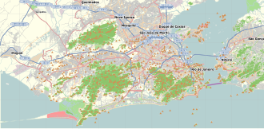

Copacabana, Rio de Janeiro
This article needs additional citations for verification. (May 2016) |
Copacabana | |
|---|---|
Neighborhood of Rio de Janeiro | |
 Copacabana Location in Rio de Janeiro | |
| Coordinates: 22°58′1″S 43°10′50″W / 22.96694°S 43.18056°W | |
| Country | Brazil |
| State | Rio de Janeiro (RJ) |
| Municipality/City | Rio de Janeiro |
| Zone | South Zone |
Copacabana (/ˌkoʊpəkəˈbænə/ KOH-pə-kə-BAN-ə, US also /-ˈbɑːnə/ -BAH-nə, Brazilian Portuguese: [ˌkɔpakaˈbɐnɐ]) is a Brazilian bairro (neighbourhood) located in the South Zone of the city of Rio de Janeiro, Brazil. It is most prominently known for its 4 km (2.5 miles) balneario beach, which is one of the most famous in the world.[1]
History
[edit]The district was originally called Sacopenapã (translated from the Tupi language, it means "the way of the socós", the socós being a kind of bird) until the mid-18th century. It was renamed after the construction of a chapel holding a replica of the Virgen de Copacabana, the patron saint of Bolivia.[2]
Characteristics
[edit]Copacabana begins at Princesa Isabel Avenue and ends at Posto Seis (lifeguard watchtower Six). Beyond Copacabana, there are two small beaches: one, inside Fort Copacabana and the other, right after it: Diabo ("Devil") Beach. Arpoador beach, where surfers go after its perfect waves, comes next, followed by the famous borough of Ipanema. The area served as one of the four "Olympic Zones" during the 2016 Summer Olympics. According to Riotur, the Tourism Secretariat of Rio de Janeiro, there are 63 hotels and 10 hostels in Copacabana.[3]
Copacabana Beach
[edit]Copacabana beach, located at the Atlantic shore, stretches from Posto Dois (lifeguard watchtower Two) to Posto Seis (lifeguard watchtower Six). Leme is at Posto Um (lifeguard watchtower One). There are historic forts at both ends of Copacabana beach; Fort Copacabana, built in 1914, is at the south end by Posto Seis and Fort Duque de Caxias, built in 1779, at the north end. Many hotels, restaurants, bars, nightclubs and residential buildings are located in the area. On Sundays and holidays, one side of Avenida Atlântica is closed to cars, giving residents and tourists more space for activities along the beach.
Copacabana Beach plays host to millions of revellers during the annual New Year's Eve celebrations, and for the first three editions of the tournament, has been the official venue of the FIFA Beach Soccer World Cup.
Copacabana promenade
[edit]The Copacabana promenade is a pavement landscape in large scale (4 kilometres long). It was rebuilt in 1970 and has used a black and white Portuguese pavement design since its origin in the 1930s: a geometric wave. The Copacabana promenade was designed by Roberto Burle Marx.
Living standard
[edit]Copacabana has the 12th highest Human Development Index in Rio; the 2000 census put the HDI of Copacabana at 0.902.[4]
Neighbourhood
[edit]According to the IBGE, 160,000 people live in Copacabana and 44,000 or 27.5% of them are 60 years old or older.[5][6] Copacabana covers an area of 5.220 km2[7] which gives the borough a population density of 20,400 people per km2. Residential buildings eleven to thirteen stories high built next to each other dominate the borough. Houses and two-story buildings are rare.
When Rio was the capital of Brazil, Copacabana was considered one of the best neighborhoods in the country.
Transportation
[edit]More than 40 different bus routes serve Copacabana,[8] as do three subway Metro stations: Cantagalo, Siqueira Campos and Cardeal Arcoverde.
Three major arteries parallel to each other cut across the entire borough: Avenida Atlântica (Atlantic Avenue), which is a 6-lane, 4 km avenue by the beachside, Nossa Senhora de Copacabana Avenue and Barata Ribeiro/Raul Pompéia Street both of which are 4 lanes and 3.5 km in length. Barata Ribeiro Street changes its name to Raul Pompéia Street after the Sá Freire Alvim Tunnel. Twenty-four streets intersect all three major arteries, and seven other streets intersect some of the three.
Notable events
[edit]- On 26 April 1949, RMS Magdalena broke in two as she was being towed into Rio de Janeiro harbour. Much of her cargo of oranges was washed up upon the beach.
- On December 31, 1994, the New Year's Eve celebrations featured a Rod Stewart concert with an attendance of 4.5 million, making it the largest concert crowd ever.[9] More recently, the beach has been a site for huge free concerts unrelated to the year-end festivities. On March 21, 2005, Lenny Kravitz performed there in front of 300,000 people, on a Monday night as part of his Electric Church Tour. On February 18, 2006, a Saturday, The Rolling Stones brought their A Bigger Bang Tour, surpassing that mark by far and attracting over 1.5 million people to the beach.
- On July 7, 2007, the beach hosted the Brazilian leg of the Live Earth concerts, which attracted 400,000 people. As the headliner, Lenny Kravitz got to play the venue a second time, with Jorge Benjor, Macy Gray, O Rappa and Pharrell as the main opening acts.
- On October 2, 2009, 100,000 people filled the beach for a huge party waiting for the IOC announcement of the host city of the 2016 Summer Olympics.
. 11 of the 15 FIFA Beach Soccer World Cups have taken place here.
- On July 28, 2013, the beach hosted the final event of the World Youth Day 2013. About 3 million people including 3 presidents joined Pope Francis when he celebrated the holy mass.
- From May to July, 2014, the United Buddy Bears exhibit was held on the Copacabana promenade and attracted more than 1,000,000 people. The presentation consisted of more than 140 bear sculptures, each two metres high and designed by a different artist.[10]
- In August 2016, Copacabana Beach was the site of beach volleyball in the 2016 Summer Olympics.
- On May 4, 2024, Madonna performed the final show of the Celebration Tour as a free event to audience of more than 1,600,000 attendees, the largest live crowd of her career.[11]
- On May 3, 2025, Lady Gaga performed a Mayhem promotional concert as a free event to launch "Todo Mundo no Rio" as a new initiative highlighting the economic benefits of entertainment in Rio de Janeiro, attracting 2,100,000 attendees.[12]
The fireworks display in Rio de Janeiro to celebrate New Year's Eve is one of the largest in the world, lasting 15 to 20 minutes. It is estimated that 2 million people go to Copacabana Beach to see the spectacle. The festival also includes a concert that extends throughout the night. The celebration has become one of the biggest tourist attractions of Rio de Janeiro, attracting visitors from all over Brazil as well as from different parts of the world, and the city hotels generally stay fully booked. The celebration is broadcast live on major Brazilian radio and television networks, including TV Globo.
History
[edit]New Year's Eve has been celebrated on Copacabana beach since the 1950s when cults of African origin such as Candomblé and Umbanda gathered in small groups dressed in white for ritual celebrations. The first fireworks display occurred in 1976, sponsored by a hotel on the waterfront and this has been repeated ever since. In the 1990s the city saw it as a great opportunity to promote the city and organized and expanded the event.
An assessment made during the New Year's Eve 1992 highlighted the risks associated with increasing crowd numbers on Copacabana beach after the fireworks display. Since the 1993-94 event concerts have been held on the beach to retain the public. The result was a success with egress spaced out over a period of 2 hours without the previous turmoil, although critics claimed that it denied the spirit of the New Year's tradition of a religious festival with fireworks by the sea. The following year Rod Stewart beat attendance records. Finally, the Tribute to Tom Jobim - with Gal Costa, Gilberto Gil, Caetano Veloso, Chico Buarque, and Paulinho da Viola - consolidated the shows at the Copacabana Réveillon.
There was a need to transform the fireworks display in a show of the same quality. The fireworks display was created by entrepreneurs Ricardo Amaral and Marius. From the previous 8–10 minutes the time was extended to 20 minutes and the quality and diversity of the fireworks was improved. A technical problem in fireworks 2000 required the use of ferries from New Year's Eve 2001–02. New Year's Eve has begun to compete with the Carnival, and since 1992 it has been a tourist attraction in its own right.[13]
There was no celebration in 2020–21 due to the COVID-19 pandemic, but the fireworks show went on.
References
[edit]- ^ "Top 10 Most Popular Beaches in the World, Beach Vacation". Photos4travel. 2008-11-25. Archived from the original on 2016-06-10. Retrieved 2016-05-25.
- ^ "Copacabana - InfoEscola". www.infoescola.com. Archived from the original on 26 January 2013. Retrieved 27 January 2022.
- ^ "Riotur". Archived from the original on September 1, 2007. Retrieved October 6, 2007.
- ^ Graham, Maria. "História de Copacabana UMRIO.NET". Copacabana.com. Retrieved 2016-05-25.
- ^ [1][dead link]
- ^ "Veja Rio on-line". Archived from the original on October 31, 2007. Retrieved October 6, 2007.
- ^ "Copacabana (Municipal Subdistrict, Rio de Janeiro, Brazil) - Population Statistics, Charts, Map and Location". www.citypopulation.de. Retrieved 2022-06-26.
- ^ "Rio Ônibus". Archived from the original on October 5, 2007. Retrieved October 8, 2007.
- ^ "Rolling Stones hold giant Rio gig". BBC News. London. 19 February 2006. Retrieved 21 January 2009.
- ^ "United Buddy Bears Exhibitions | Saoudi". saoudi.org. Retrieved 2025-04-17.
- ^ "Madonna leva 1,6 milhão a Copacabana, diz Riotur" [Riotur says Madonna took 1.6 million to Copacabana]. G1 (in Portuguese). Grupo Globo. May 5, 2024. Archived from the original on May 5, 2024. Retrieved May 5, 2024.
- ^ "Lady Gaga reúne 2,1 milhões de pessoas em show histórico em Copacabana, diz Riotur". G1 (in Brazilian Portuguese). 2025-05-04. Retrieved 2025-05-04.
- ^ "A História do Réveillon de Copacabana". Diariodorio.com. 2012-12-29. Retrieved 2016-05-25.
.jpg)
{kind=link}
{kind=link}
{kind=link}
{kind=link}
{kind=link}
{kind=link}
{kind=link}
{kind=link}
{kind=link}
{kind=link}
{kind=link}
{kind=link}
.jpg){kind=link}
{kind=link}
.jpg){kind=link}
{kind=link}
.jpg){kind=link}
{kind=link}